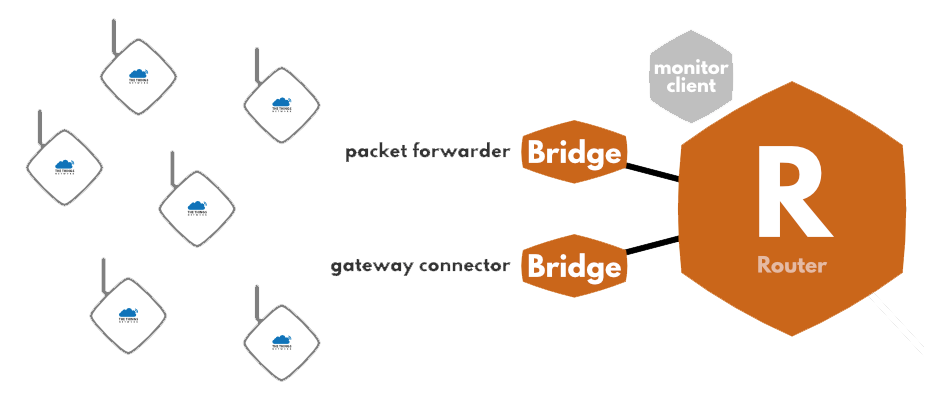

Gateways
Outdated: this section documents The Things Network V2, which is no longer maintained. See the documentation for The Things Stack V3, or browse the V2 docs index.
Gateways form the bridge between devices and The Things Network. Devices use low power networks like LoRaWAN to connect to the Gateway, while the Gateway uses high bandwidth networks like WiFi, Ethernet or Cellular to connect to The Things Network.
All gateways within reach of a device will receive the device’s messages and forward them to The Things Network. The network will deduplicate the messages and select the best gateway to forward any messages queued for downlink. A single gateway can serve thousands of devices.

How do gateways work? #
Gateways are routers equipped with a LoRa concentrator, allowing them to receive LoRa packets. You can usually find two kinds of gateways:
-
Gateways running on a minimal firmware, making them low-cost and easy to use (e.g. The Things Gateway), running only the packet forwarding software.
-
Gateways running an operating system, for which the packet forwarding software is run as a background program (e.g. Kerlink IoT Station, Multitech Conduit). This gives more liberty to the gateway administrator to manage their gateway and to install their own software.
Can I install a gateway without a license? #
LoRaWAN operates on unlicensed bands, so in most countries, running your own gateway is completely legal. There can be, however, country-to-country restrictions (e.g. where to install antennas, and such). Reach out to your local communities if you have a doubt!
Help build a global network #
No coverage where your device lives? Need more bandwidth? Simply add another Gateway to extend the network for both your own use and anyone else’s.
We’re offering the affordable The Things Gateway. But you can use any standard LoRa gateway with The Things Network. Under Where to start, you can find how to buy or build your own gateway to extend the network!
If you’d like to document and promote another gateway, contact us for our Ambassador & Partner programs.
- Troubleshooting
- Lightning Protection
- Packet Forwarders
- Pi Supply Gateway HAT
- Gateway Registration
- MultiTech Conduit
- RAK2245 Pi Hat Edition - LoRaWAN® Gateway Concentrator Module
- RAK7243C Pilot Gateway
- RAK831
- The Things Gateway
- Where to start
- The Things Indoor Gateway
- The Things Outdoor Gateway
- AAEON
- Cisco LoRaWAN Gateway
- Kerlink
- Laird RG1xx
- LoRa Basics™ Station
- Lorrier LR2
- MikroTik Routerboard
- P-NUCLEO-LRWAN2
- Root Certificates
- Tektelic
- Ursalink